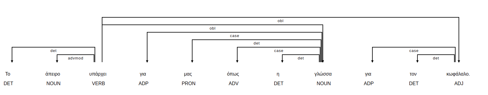
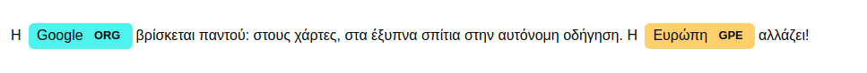
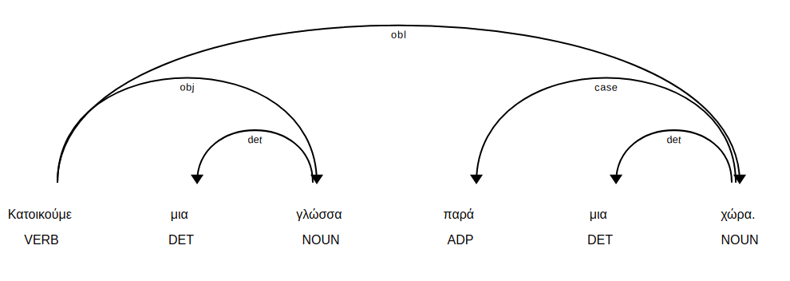
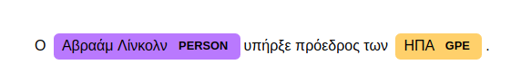
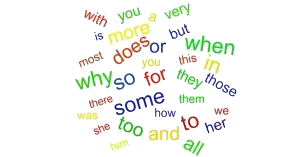
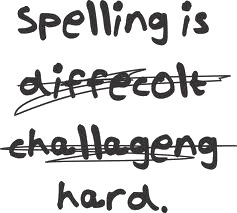
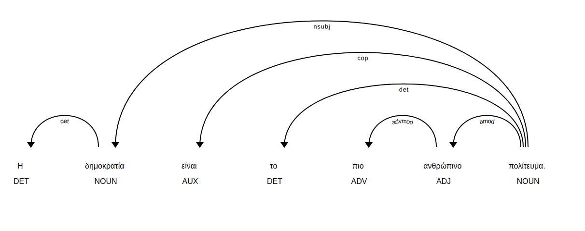
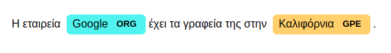

Addition of Greek language to spaCy - GSOC 2018
Neemo is a side result of the project "Addition of Greek language to spaCy" for Google Summer of Code 2018.
This page serves as a report for the Google Summer of Code 2018 Project.
The project was developed under the auspices of GFOSS - Open Technologies Alliance.
Report Contents
Repositories and Wiki
This section contains some useful links/resources for the project.
- The first link is the project repository where you can all the work that is related to the integration of Greek language to spaCy platform.
- The second link is the Neemo repository in which you can find all the work related to the implementation of an opensource demo on top of spaCy
that demonstrates and performs free and for all common NLP tasks in 7 languages, including Greek.
- The third link is the project wiki in which you will find detailed and explanatory documentation for everything related to the
integration of Greek language to spaCy.
- The fourth link is the demo wiki in which you will find detailed and explanatory documentation about everything related
to the implementation, the usage and the reproduction of the demo.

Extensive documentation about the integration of Greek language to spaCy.
Extensive documentation about the implementation, the usage and the reproduction of the demo.
Problem Statement - Project Goals
We live in the era of data. Every minute, 3.8 billion internet users, produce content; more than 120 million emails , 500.000 Facebook comments, 3 million Google searches. If we want to process that amount of data efficiently, we need to process natural language. Open source projects such as spaCy, textblob, or NLTK contribute significantly to that direction and thus they need to be reinforced.
This project is about improving the quality of Natural Language Processing of Greek Language.
The project goals can be categorized as following:
- Integration of Greek language to spaCy platform Status: Complete
- Production of models for Part-Of-Speech (POS) tagging, Dependency Analysis (DEP) and Named Entities Recognition (NER), with and without vectors. Status: Complete
- An open-source text analysis tool (demo) in which everyone can perform common NLP tasks in 7 languages. Status: Complete
Results - Production ready tools
Neemo - Open Source Text Analysis Tool
The first to mention outcome of the project is Neemo .
Neemo is an open-source text analysis tool that has been developed as a demonstration of the project results.
Neemo leverages Spacy's capabilities to extract as much information as possible from a raw text.
Briefly, in this demo you can perform the following tasks with your text in 7 languages:
- Language identification (performed using langid library).
- Text tokenization.
- Sentence splitting.
- Lemmatization.
- Part of Speech tags identification.
- Named Entity Recognition (Location, Person, Organization).
- Text summarization (uses Gensim's implementation of the TextRank algorithm).
- Keywords extraction.
- For the Greek language, there are also the following bonus features:
- Text Categorization among the following categories: Sports, Science, World News, Greek News, Environment, Politics, Art, Health, Science.
The Greek classifier is built with FastText and is trained in 20.000 articles labeled in these categories.
Accuracy reaches 90% .
- Text subjectivity analysis.
- Emotion analysis. It detects the main text emotion among the following emotions: Anger, Disgust, Fear, Happiness, Sadness, Surprise.
The supported languages at the moment are the following: Greek, English, German, Spanish, Portuguese, French, Italian and Dutch.
Text can either be provided or imported from a URL. For the preprocess of the text imported from url, the following libraries
are used: python readability, BeautifulSoup4.
Integration of Greek language to spaCy.
Greek language has been successfully integrated to spaCy, which was actually the most important goal of the project.
You can see the pull request here .
Each part of the process of integrating Greek language to spaCy is discussed in detail in the Wiki page of the project.
During the development part for the integration of Greek language to spaCy, some submodules were produced that can be used indendently. There is a reference to these submodules, in the deliverables section of this report page.
Greek language models
Two models for Greek language have been produced. There is an ongoing process of uploading them to spaCy.
After that, you will be able to install them with the folllowing commands:
python3 -m spacy download el_core_web_sm
python3 -m spacy download el_core_web_lg
Greek language models support all the capabilities that you will find in the deliverables section.
Sentence splitting, tokenization, Part Of Speech Tagging, Syntax Analysis using DEP tags, Named Entities Recognition, lexical attributes extraction, norm exceptions and stop-words lists, are all included the Greek language models.
The big Greek model (el_core_web_lg) includes word vectors so it supports features such as similarity detection between texts.
You can find more about the models production, usage and maintenance, in the models page of the wiki.
Some visualizations from the models usage:




Empowerment of spaCy
A side goal of the project is to empower spaCy itself.
There is an open-dialogue with the creators of spaCy, who we would like to thank for their continuous support and enthusiasm.
Documentation Improvements
A pull request for documentation improvements was successfully merged.
The pull request was about a small error found in the spaCy documentation in the pseudocode provided for overriding the spaCy tokenizer.
You can see the pull request here.
Sharing awareness
There is an ongoing process of writing an article for Explosion AI Blog regarding the integration of Greek language to spaCy.
A link to the post will be published here when it's ready.
Innovative approaches
In the process of integrating Greek language to spaCy some new approaches are followed.
Hopefully, these approaches will inspire other languages too.
- Greek language is the second language that follows a rule based lemmatization procedure.
- There were no available data for training NER classifier, so there was a need for creating data.
A fast procedure of annotating data using Prodigy annotation tool is proposed for future reference.
Deliverables
Deliverables are independent functionality submodules or/and useful resources that were produced either during the process of integrating Greek language to spaCy or
during the process of experimenting with the functionalities of spaCy and the demo implementation.
A list of the deliverables and a short description of each of them follows. You can find the functionality submodules in the res/modules folder of the project repo (here), serving as examples for usage.
Each of the deliverables is labelled with one of the following tags:
greek-spacy-support , nlp-task, resource.
- greek-spacy-support tag stands for modules that were required for the integration of Greek language to spaCy.
- nlp-task stands for submodules that provide useful functionalities for some nlp task. Those modules may be implemented for more than one languages or only for Greek language.
- resource is a tag that stands for useful resources for greek language that can be datasets that were created during the processs of integrating Greek language to spaCy.
If you want to learn more, there is an individual page for each of them in the project wiki or the demo wiki.
Deliverables list:
- Tokenizer. greek-spacy-support
You can use this submodule having one of the produced greek models in order to split your sentence(s) to tokens, independently of the others spaCy modules.
Sample input: Θέλω να μου σπάσεις αυτήν την πρόταση σε κομμάτια
Sample output: [Θέλω, να, μου, σπάσεις, αυτήν, την, πρόταση, σε, κομμάτια]
Submodule link.
- Lemmatizer. greek-spacy-support
This submodule is for sentences lemmatization.
Sample input: Τα σύμβολα του αγώνα.
Sample output:
Original token: Τα , Lemma: τα
Original token: σύμβολα , Lemma: σύμβολο
Original token: του , Lemma: του
Original token: αγώνα , Lemma: αγώνα
Original token: . , Lemma: .
Greek lemmatizer is special because it follows a rule based approach. You can find extensive documentation about lemmatizer in the corresponding
wiki page. Submodule link.
- Sentence Splitter. greek-spacy-support
You can use this submodule using one of the produced greek models in order to split sentences in a greek text independently of the rest of the
spaCy modules.
Sample input:
Αυτή είναι μια πρόταση. Αυτή είναι μια δεύτερη πρόταση. Και αυτή μια τρίτη πρόταση.
Sample output:
[ Αυτή είναι μια πρόταση.,
Αυτή είναι μια δεύτερη πρόταση.,
Και αυτή μια τρίτη πρόταση.]
Submodule link.
- Stop words list. resource

In computing, stop words are words which are filtered out before or after processing of natural language data. Though "stop words" usually refers to the most common words in a language, there is no single universal list of stop words used by all natural language processing tools, and indeed not all tools even use such a list. Some tools specifically avoid removing these stop words to support phrase search.
The stop-words wiki page is available here. The final list with the stop-words of Greek language can be found here.
- Norm exceptions list. resource

spaCy usually tries to normalise words with different spellings to a single, common spelling. This has no effect on any other token attributes, or tokenization in general, but it ensures that equivalent tokens receive similar representations. This can improve the model's predictions on words that weren't common in the training data, but are equivalent to other words – for example, "realize" and "realise", or "thx" and "thanks".
The norm-exceptions wiki page is available here. The final list with the stop-words of Greek language can be found here.
- Lexical Attributes Functions. greek-spacy-support
Each token of a spaCy doc is checked against some potential attributes. In this way, urls, nums and other types of special tokens can be
seperated from the normal tokens.
Sample input: Η ιστοσελίδα για το demo μας είναι: https://nlp.wordames.gr
Sample output: Url: https://nlp.wordames.gr
Submodule link.
- Part of Speech Tagger. greek-spacy-support
You can use this submodule having one of the produced greek models in order to get part of speech tags for your tokens, independently of the others spaCy modules.
Sample input: Η δημοκρατία είναι το πιο ανθρώπινο πολίτευμα.
Sample output:
Token: Η Tag: DET
Token: δημοκρατία Tag: NOUN
Token: είναι Tag: AUX
Token: το Tag: DET
Token: πιο Tag: ADV
Token: ανθρώπινο Tag: ADJ
Token: πολίτευμα Tag: NOUN
Token: . Tag: PUNCT
Visualized output using displaCy:

For extensive documentation of POS tagger for Greek language, check the corresponding wiki page. Submodule link.
- DEP Tagger. greek-spacy-support
You can use this submodule having one of the produced greek models in order to analyze syntax of your text, independently of the others spaCy modules.
- Get DEP tags.
Sample input: Η δημοκρατία είναι το πιο ανθρώπινο πολίτευμα.
Sample output:
Token:η, DEP tag: det
Token:δημοκρατία, DEP tag: nsubj
Token:είναι, DEP tag: cop
Token:το, DEP tag: det
Token:πιο, DEP tag: advmod
Token:ανθρώπινο, DEP tag: amod
Token:πολίτευμα, DEP tag: ROOT
Token:., DEP tag: punct
- Navigate/Visualize the DEP tree.
Sample input:
Sample output:
αγόρασε
__________________|______
| | | άφησε
| | | ______|__________
| | Κώστας | | | ψυγείο
| | | | | | |
πατάτες . Ο και τις πάνω στο
Visualization code source. Submodule link.
- NER Tagger. greek-spacy-support
Named-entity recognition (NER) (also known as entity identification, entity chunking and entity extraction) is a subtask of information extraction that seeks to locate and classify named entities in text into pre-defined categories such as the names of persons, organizations, locations, expressions of times, quantities, monetary values, percentages, etc.
The greek language models support the following NER tags: ORG, PERSON, LOC, GPE, EVENT, PRODUCT.
Having one of the greek models, you can use the NER tagger:
Sample Input: Η εταιρεία Google έχει τα γραφεία της στην Καλιφόρνια.
Sample Output: Entity:Google, Label:ORG, Entity:Καλιφόρνια, Label:GPE
Visualization using displaCy:

For extensive documentation of NER tagger for Greek language, check the corresponding wiki page. Submodule link.
- Sentiment Analyzer. nlp-task
This submodule gives you a subjectivity score for your text and an emotion analysis .
Sample input: Έχω μείνει έκπληκτος! Πώς γίνεται αυτό; Η έκπληξη είναι τόσο μεγάλη! Α, τώρα εξηγούνται όλα.
Sample output:
Subjectivity: 16.666666666666664%
Main emotion: surprise. Emotion score: 33.333333333333336%
Currently available only for the Greek language.
Submodule link.
- Topic classifier. nlp-task
This submodule is for text classification. It can categorize text in the following categories:
Sports, Science, World News, Greek News, Environment, Politics, Art, Health, Science.
Currently available only for the Greek language.
Future Work
In this section, some suggestions for future work are listed.
There are difficulty labels assigned to each task and some guidelines to start with. There are also labels which explain if each task refers to the
improvement of Greek language support or to the addition/improvement of a general nlp task.
For more info on contribution, you can always have a look at the contribute page of the project wiki.
- Add more rules to lemmatizer.
greek-spacy-support
Difficulty: easy
Greek language follows a rule based lemmatization technique. It is highly suggested to have a look in the lemmatizer wiki page
to understand more about the approach followed. If you do, you will find out how scalable Greek language lemmatization is. Adding rules should be as easy as completing some lines in this file.
For more info, check the contribute wiki page.
- Overwrite the spaCy tokenizer.
greek-spacy-support Difficulty: hard
Each language modifies the spaCy tokenization procedure by adding tokenizer exceptions.
The tokenizer exceptions approach is not scalable for languages such as Greek. The reasons are pretty much the same as with the lemmatizer.
A new approach, rule-based tokenization is proposed.
The suggested steps are the following:
- Rewrite the spaCy tokenizer in pure Python, following the pseudo-code provided here. This is already done, you can find the code here.
- Write regex expressions to catch the following phenomena of Greek language: "εκθλίψεις", "αφαιρέσεις", "αποκοπές".
- Transform the tokens that match one of the phenomena mentioned above, to other(s) tokens using transformation rules.
- Add noun chunks. greek-spacy-support Difficulty: medium
- Improve models accuracy. greek-spacy-support Difficulty: medium
- Implement topic classifier for other languages as well. nlp-task Difficulty: medium
- Implement sentiment analyzer for other languages as well. nlp-task Difficulty: medium
- Implement attitude detector and integrate it to demo.nlp-task Difficulty: hard
People
- Google Summer of Code 2018 Student: Ioannis Daras
- Mentor: Markos Gogoulos
- Mentor: Panos Louridas